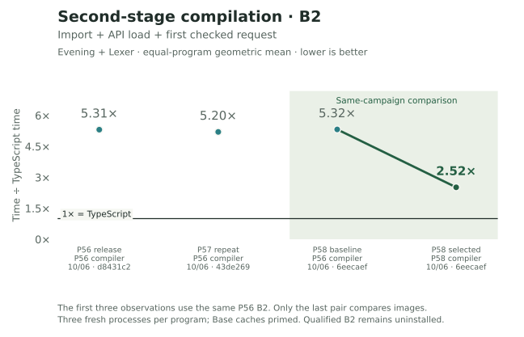
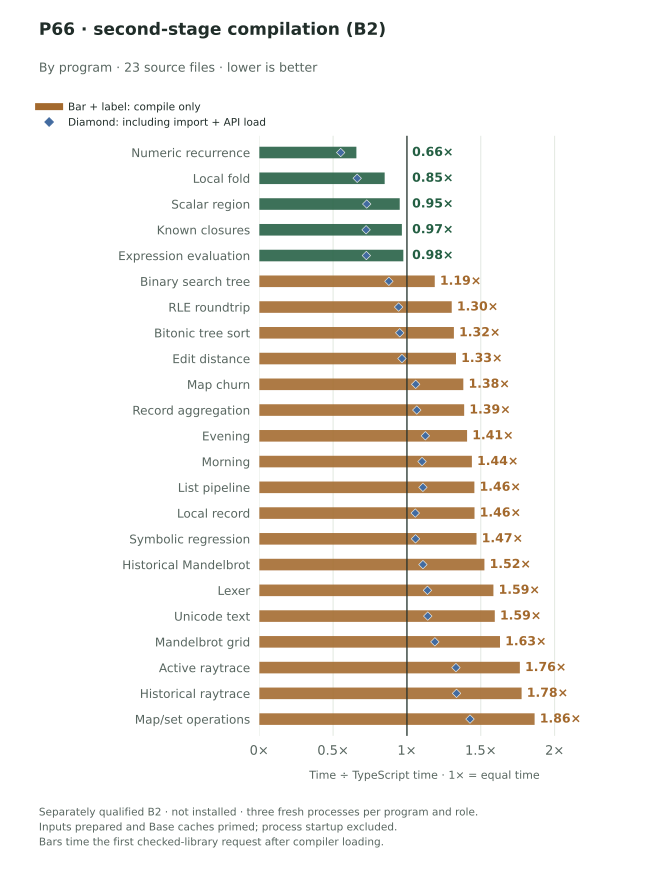
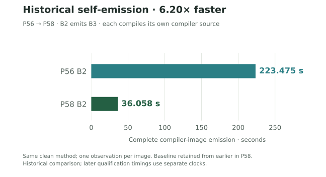

Checked first stage
The bootstrap-derived compiler used by the ordinary command line.
AN INDEPENDENT COMPILER · A PUBLIC EXPERIMENT
What happens when we build the Bend compiler in Bend?
We track program speed, compilation by the second- and first-stage compilers, correct language behavior, and the code we maintain.
See the progressTHE COMPILER GENERATIONS
The same Bend compiler source, running as separately identified JavaScript images.
The bootstrap-derived compiler used by the ordinary command line.
Emitted by B1. Freshly checks its source and compiles ordinary programs.
Emitted by B2, with exactly the same bytes as B2.
B2 is measured and qualified separately; it has not replaced the installed B1 API. Program speed times B1-generated programs; B2 emits byte-identical benchmark programs.
01 / THE NUMBERS
Read the result.
Then follow the reason.
45 benchmark cases · 23 programs · Phase 58 last01 · direct JavaScript
Generated programs average 4.6% above TypeScript execution time on the maintained suite. Eighteen of 45 cases are faster than the reference.
TypeScript = 1×. The benchmark set stays fixed.

Geometric mean of 45 Bend / TypeScript median execution-time ratios. Grouping by source produces 23 bars; equal-source weighting gives 1.041×. The timed operation includes result checks; compilation, import and first calls are separate.
The same TypeScript baseline, one program at a time.

The final P58 release preserves program speed while improving compiler work: 1.47% less execution time than its freshly measured P56 control. All 669 samples pass their output checks.
| Compiler release / commit | Release date | Average / TS | Cases | Source | Measurement note |
|---|---|---|---|---|---|
| Phase 37 · 9391ebe ↗ | 2026-10-01 17:00:35 UTC | 18.881× | 45 | Report ↗ | Historical/variation points:1,000ms warmup/300ms target. New families:600ms warmup/250ms target. |
| Phase 39 · e95b1c9 ↗ | 2026-10-01 21:10:07 UTC | 16.842× | 45 | Report ↗ | Historical/variation points:1,000ms warmup/300ms target. New families:600ms warmup/250ms target. |
| Phase 40 · 8582de7 ↗ | 2026-10-03 08:31:50 UTC | 14.21× | 45 | Report ↗ | 42 exact-output comparisons reused; three fresh comparisons. |
| Phase 41 · 5ec82b3 ↗ | 2026-10-03 18:03:39 UTC | 12.569× | 45 | Report ↗ | Phase41 image measured as same-run baseline in Phase42. |
| Phase 42 · 714c5f5 ↗ | 2026-10-03 23:30:39 UTC | 8.862× | 45 | Report ↗ | 1,000ms warmup/300ms target. |
| Phase 43 · 69d8c70 ↗ | 2026-10-04 04:51:32 UTC | 6.161× | 45 | Report ↗ | 1,000ms warmup/300ms target. |
| Phase 44 · 8f57b1b ↗ | 2026-10-04 09:05:57 UTC | 6.083× | 45 | Report ↗ | 1,000ms warmup/300ms target. |
| Phase 45 · ab74ece ↗ | 2026-10-04 19:21:20 UTC | 3.079× | 45 | Report ↗ | Same-run previous Phase44 average:6.086717×; latest/previous pair improves1.977073×. |
| Phase 47 · ee54723 ↗ | 2026-10-05 01:36:56 UTC | 2.919× | 45 | Report ↗ | 1,000ms warmup / 300ms target; all669 fresh samples. The prior release is remeasured in this campaign. Fresh paired average 3.085148× → 2.919418× TypeScript; speedup 1.056768×. |
| Phase 48 · 2d6e5d8 ↗ | 2026-10-05 05:16:52 UTC | 2.679× | 45 | Report ↗ | 1,000ms warmup / 300ms target; all669 fresh samples. The prior release is remeasured in this campaign. Fresh paired average 2.902438× → 2.678937× TypeScript; speedup 1.083429×. |
| Phase 51 · 3accb46 ↗ | 2026-10-05 08:22:45 UTC | 2.928× | 45 | Report ↗ | Historical P48 RNFA04 ratio2.678936986 differs from fresh unchanged baseline3.007942236; trend is a campaign snapshot, not a controlled regression. Fresh paired comparison improves1.027364×; Evening gain warmup-sensitive. Fresh paired average 3.007942× → 2.927825× TypeScript; speedup 1.027364×. |
| Phase 52 · 860c68b ↗ | 2026-10-05 17:54:03 UTC | 1.124× | 45 | Report ↗ | Historical P51 ratio2.927825260 is not this run's denominator; fresh P51 ratio2.630605061. Contract boundary must remain visible on timeline even with same45 source/input cohort and inherited timing preset. Installed with one unwaived independent semantic failure (95/96); original NaN source oracle40 differs from candidate39 and TypeScript1. Direct JavaScript is opt-in at this checkpoint; legacy remains the ordinary default. Fresh paired average 2.630605× → 1.123799× TypeScript; speedup 2.340815×. |
| Phase 53 · 29dbaa4 ↗ | 2026-10-06 00:18:42 UTC | 1.07× | 45 | Report ↗ | Original independent semantics96/96; candidate fixes NaN source oracle40 while TypeScript remains1. Default-only correction screen is flat1.001759×; full speed result includes ordered lowering. Direct JavaScript becomes the default. Same direct calling contract asPhase52. Fresh paired average 1.129266× → 1.069599× TypeScript; speedup 1.055785×. |
| Phase 56 · d8431c2 ↗ | 2026-10-06 05:07:01 UTC | 1.062× | 45 | Report ↗ | Freshly measured as the P58 campaign baseline, not a full 45-case run from the P56 release. At P56, 44 points retained P53 byte identity and one MapSet point improved by 15.9%. These timings use B1-generated programs. Separately qualified B2 emits byte-identical benchmark programs; no additional B2 runtime sample is claimed. |
| Phase 58 · 6eecaef ↗ | 2026-10-06 11:31:04 UTC | 1.046× | 45 | Report ↗ | Selected last01 installed; earlier shared01 wasneverinstalled. Same-run45point fresh comparison against installed-at-startP56String01; all669samples pass. Timing uses the installed checked-derived B1. Separately qualified B2 emits byte-identical benchmark programs; no additional B2 runtime sample is claimed. Same-run Phase56 baseline1.061731× → last01 1.046110× TypeScript;1.47% less execution time. Earlier uninstalled shared01 is excluded. |
| Program / source | Cases | Average / TS |
|---|---|---|
| Evening mixed program | 1 | 0.707× |
| Map / Set operations | 1 | 0.825× |
| Morning mixed program | 1 | 0.863× |
| RLE roundtrip | 1 | 0.873× |
| Tree bitonic sort · 3 inputs | 3 | 0.963× |
| Unicode text · 2 inputs | 2 | 0.967× |
| Record aggregation · 2 inputs | 2 | 0.979× |
| Map updates · 2 inputs | 2 | 0.982× |
| Captured closures · 2 inputs | 2 | 0.986× |
| Symbolic regression · 3 inputs | 3 | 0.995× |
| Numeric recurrence · 2 inputs | 2 | 1.009× |
| Expression evaluation · 2 inputs | 2 | 1.01× |
| scalar region | 2 | 1.01× |
| Lexer · 3 inputs | 3 | 1.011× |
| List pipeline · 2 inputs | 2 | 1.016× |
| Binary search tree · 2 inputs | 2 | 1.03× |
| Array fold · 3 inputs | 3 | 1.056× |
| local row | 2 | 1.066× |
| Edit distance · 3 inputs | 3 | 1.13× |
| Ray tracing · 2 inputs | 2 | 1.34× |
| Ray tracing | 1 | 1.414× |
| Mandelbrot | 1 | 1.521× |
| Mandelbrot · 2 inputs | 2 | 1.616× |
| Case | Bend (ms) | TypeScript (ms) | Bend / TS | Source |
|---|---|---|---|---|
| mandelbrot | 0.068891 | 0.045293 | 1.521× | Report ↗ |
| editdist | 5.604578 | 4.983084 | 1.125× | Report ↗ |
| tree-bitonic | 0.263287 | 0.274411 | 0.959× | Report ↗ |
| lexer | 1.702176 | 1.696811 | 1.003× | Report ↗ |
| symreg | 1.108382 | 1.116395 | 0.993× | Report ↗ |
| test-morning-program | 0.002804 | 0.003248 | 0.863× | Report ↗ |
| test-evening-program | 0.001818 | 0.002573 | 0.707× | Report ↗ |
| test-rle-roundtrip | 0.000495 | 0.000567 | 0.873× | Report ↗ |
| test-map-set-ops | 0.017228 | 0.020878 | 0.825× | Report ↗ |
| raytrace | 48.529465 | 34.322689 | 1.414× | Report ↗ |
| local-pair | 1.408257 | 1.233336 | 1.142× | Report ↗ |
| local-fold | 0.04124 | 0.041205 | 1.001× | Report ↗ |
| scalar-region-0 | 0.000068 | 0.000067 | 1.019× | Report ↗ |
| scalar-region-8192 | 0.099835 | 0.099736 | 1.001× | Report ↗ |
| complete-generic-row32 | 0.006694 | 0.006726 | 0.995× | Report ↗ |
| variation-editdist-0-17 | 1.380082 | 1.237476 | 1.115× | Report ↗ |
| variation-editdist-3-123 | 11.422631 | 9.921112 | 1.151× | Report ↗ |
| variation-lexer-6-17 | 0.412924 | 0.409667 | 1.008× | Report ↗ |
| variation-lexer-10-123 | 6.742555 | 6.605014 | 1.021× | Report ↗ |
| variation-tree-bitonic-6-17 | 0.036074 | 0.036884 | 0.978× | Report ↗ |
| variation-tree-bitonic-9-123 | 0.685464 | 0.719532 | 0.953× | Report ↗ |
| variation-symreg-4-17 | 0.553788 | 0.557355 | 0.994× | Report ↗ |
| variation-symreg-7-123 | 1.865379 | 1.865884 | 1× | Report ↗ |
| variation-local-fold-128-0 | 0.001464 | 0.001423 | 1.029× | Report ↗ |
| variation-local-fold-8192-123 | 0.129998 | 0.113694 | 1.143× | Report ↗ |
| variation-mandelbrot-grid-4-7 | 0.025973 | 0.01569 | 1.655× | Report ↗ |
| variation-mandelbrot-grid-5-31 | 0.366643 | 0.23246 | 1.577× | Report ↗ |
| variation-ray-active-64-2440 | 0.417715 | 0.30356 | 1.376× | Report ↗ |
| variation-ray-active-256-2240 | 1.622872 | 1.24392 | 1.305× | Report ↗ |
| coverage-closures-64 | 0.005451 | 0.00565 | 0.965× | Report ↗ |
| coverage-closures-256 | 0.021266 | 0.021089 | 1.008× | Report ↗ |
| coverage-list-pipeline-128 | 0.00652 | 0.006399 | 1.019× | Report ↗ |
| coverage-list-pipeline-512 | 0.027839 | 0.027468 | 1.013× | Report ↗ |
| coverage-bst-32 | 0.022626 | 0.021954 | 1.031× | Report ↗ |
| coverage-bst-64 | 0.052181 | 0.050673 | 1.03× | Report ↗ |
| coverage-unicode-text-16 | 0.020239 | 0.021314 | 0.95× | Report ↗ |
| coverage-unicode-text-64 | 0.084685 | 0.085996 | 0.985× | Report ↗ |
| coverage-expression-32 | 0.002106 | 0.002087 | 1.009× | Report ↗ |
| coverage-expression-128 | 0.00884 | 0.008748 | 1.011× | Report ↗ |
| coverage-map-churn-32 | 0.137169 | 0.141539 | 0.969× | Report ↗ |
| coverage-map-churn-128 | 0.752267 | 0.755868 | 0.995× | Report ↗ |
| coverage-numeric-recurrence-256 | 0.002043 | 0.001979 | 1.033× | Report ↗ |
| coverage-numeric-recurrence-1024 | 0.00766 | 0.007768 | 0.986× | Report ↗ |
| coverage-record-aggregation-64 | 0.279013 | 0.299771 | 0.931× | Report ↗ |
| coverage-record-aggregation-256 | 1.244836 | 1.209329 | 1.029× | Report ↗ |
Genuine direct B2 · 2 programs · Phase 58 last01 · separately qualified
The compiler generated by Bend now compiles the two measured programs in 52.69% less time than the paired P56 B2. This qualified image is separate from the installed B1 compiler.
Bend-generated compiler image. TypeScript = 1×.

Equal-weight geometric mean of two program ratios. Each program uses the median of three fresh processes, timing host import, API load and the first check + library emission. Private Base disk caches are prepared first. Process launch, cache preparation, provenance and output hashing are outside timing; this is not a cold-filesystem test.
The same TypeScript baseline, one program at a time.

Clean emission: 223.475 → 36.058 seconds under the same method, using each image’s own source. The control is an earlier retained run, not a consecutive pair. The separate qualification timings below establish fresh type acceptance and complete B2/B3 byte equality.

B2 now takes 2.42× TypeScript time for Evening and 2.62× for lexer. The combined compiler changes also reduce sampled cumulative lexer allocation by 89.4%.
| Observation / report commit | Publication date | Average / TS | Programs | Source | Measurement note |
|---|---|---|---|---|---|
| P56 · d8431c2 ↗ | 2026-10-06 05:07:01 UTC | 5.309× | 2 | Report ↗ | Original Phase56 screen. Host import plus first request includes lazy API loading. Three rotated fresh processes per role and input; no later requests. P55 has no comparable two-program B2 latency measurement. |
| P57 recheck · 43de269 ↗ | 2026-10-06 07:17:29 UTC | 5.199× | 2 | Report ↗ | Phase57 remeasures unchanged Phase56 B2. Load is now explicit host import plus actual API load, followed by first request and three later requests. This is a new acquisition campaign, not a compiler optimization. |
| P56 recheck · 6eecaef ↗ | 2026-10-06 11:31:04 UTC | 5.32× | 2 | Report ↗ | Phase56 B2 freshly remeasured as the old compiler in the final Phase58 last01 request campaign. Both this baseline and the selected image use their own same-campaign TypeScript samples. The observation belongs to Phase58, not the Phase56 release date. |
| P58 last01 · 6eecaef ↗ | 2026-10-06 11:31:04 UTC | 2.517× | 2 | Report ↗ | Final selected last01 B2, independently qualified but not installed. Three rotated fresh processes per compiler and input, each with one first and three later requests. Excludes superseded shared01 and syntax-only diagnostic derivatives. |
| Program | Bend first window (ms) | TypeScript first window (ms) | Bend / TS | Source |
|---|---|---|---|---|
| Evening | 2,008.85 | 831.657 | 2.415× | Program ↗ |
| Lexer | 1,499.595 | 571.887 | 2.622× | Program ↗ |
Latest same-window comparison: 5.32× → 2.517× TypeScript time (52.69% less time). Historical checkpoints use separately paired TypeScript runs and may use different program sets; compare only the stated scopes.
| Compiler | Seconds | Method | Source | Scope |
|---|---|---|---|---|
| Phase56 B2 | 223.475242 | emission-method02 | Report ↗ | Retained earlier Phase58 campaign baseline; not rerun consecutively with last01. One clean worker observation, reported to six decimal seconds. |
| Phase58 last01 B2 | 36.058487 | emission-method02 | Report ↗ | One fresh clean worker observation. Compiles its own changed compiler source and independently reproduces its own complete B3 bytes. |
| Phase | Reproduction (s) | Fresh type check (s) | Source | Scope |
|---|---|---|---|---|
| P55 | Stopped at 300 s | — | Report ↗ | Phase55 host02 B2 reproduction stopped at the 300-second deadline. No completed baseline time or exact speedup exists. |
| P56 | 250.719 | 29.681 | Report ↗ | Separate fixed-point qualification worker; not the same clean emission-method02 campaign as the 223.475→36.058-second comparison. |
| P58 | 39.199 | 11.712 | Report ↗ | Separate correctness qualification gate. Fresh source acceptance and byte-identical B3 reproduction are separate obligations and clocks. |
Installed checked B1 · 2 programs · Phase 58 last01 · check + library emission
The installed checked B1 takes about 2.94× TypeScript time on Evening and lexer. Its paired aggregate changes by +0.40%; the larger compiler gains belong to B2.
Installed checked compiler image. TypeScript = 1×.

The current headline equally weights two import + API load + first-request ratios, each from the median of three fresh processes. Private Base disk caches are prepared first; process launch, cache preparation, provenance and output hashing are excluded. Older checking-only and request-only samples retain their own boundaries.
The same TypeScript baseline, one program at a time.

B1 stays roughly flat: the first Evening request is 0.76% faster and lexer 1.59% slower. The separately qualified B2 improvements are shown above.
| Release / commit | Commit date | Bend (s) | TypeScript (s) | Bend / TS | Reference pin | Report |
|---|---|---|---|---|---|---|
| P8 · bc322d9 ↗ | 2026-09-28 | 205.26 | 2.804 | 73.203× | b2111cf | Report ↗ |
| P9 · f21e9f0 ↗ | 2026-09-28 | 66.844 | 2.94 | 22.736× | b2111cf | Report ↗ |
| P10 · 5f561c4 ↗ | 2026-09-28 | 51.751 | 2.887 | 17.926× | b2111cf | Report ↗ |
| P11 · 1101206 ↗ | 2026-09-28 | 29.729 | 2.785 | 10.675× | b2111cf | Report ↗ |
| P12 · 9a4e109 ↗ | 2026-09-28 | 26.897 | 2.855 | 9.421× | b2111cf | Report ↗ |
| P14 · abb200f ↗ | 2026-09-28 | 24.978 | 2.812 | 8.883× | b2111cf | Report ↗ |
| P15 · a383163 ↗ | 2026-09-29 | 24.102 | 2.886 | 8.352× | b2111cf | Report ↗ |
| P16 · 0b51d96 ↗ | 2026-09-29 | 12.357 | 3.611 | 3.422× | b2111cf | Report ↗ |
| P17 · fddfc84 ↗ | 2026-09-29 | 11.626 | 3.4 | 3.419× | b2111cf | Report ↗ |
| P19 · fd9e8b2 ↗ | 2026-09-29 | 11.057 | 3.483 | 3.175× | b2111cf | Report ↗ |
| P20 · c385d39 ↗ | 2026-09-29 | 10.941 | 3.446 | 3.175× | b2111cf | Report ↗ |
| P21 · df94915 ↗ | 2026-09-29 | 10.955 | 3.436 | 3.188× | b2111cf | Report ↗ |
| P22 · 1e64079 ↗ | 2026-09-29 | 10.699 | 3.383 | 3.162× | b2111cf | Report ↗ |
| P23 · 8eb2cc0 ↗ | 2026-09-29 | 11.013 | 3.552 | 3.101× | 0187512 | Report ↗ |
| P24 · 5350b2f ↗ | 2026-09-29 | 11.156 | 3.737 | 2.985× | 0187512 | Report ↗ |
| Release | Predecessor (s) | Candidate (s) | Less time | Report |
|---|---|---|---|---|
| P9 | 208.224 | 66.844 | 67.9% | Report ↗ |
| P11 | 51.443 | 29.729 | 42.21% | Report ↗ |
| P16 | 30.584 | 12.357 | 59.6% | Report ↗ |
| P22 | 11.017 | 10.699 | 2.88% | Report ↗ |
| P24 | 11.73 | 11.156 | 4.89% | Report ↗ |
| Observation / report commit | Publication date | Average / TS | Programs | Source | Measurement note |
|---|---|---|---|---|---|
| P42 · 714c5f5 ↗ | 2026-10-03 23:30:39 UTC | 5.241× | 4 | Report ↗ | Phase42 release remeasured as the fresh baseline in the Phase43 campaign; its x-position is the release commit date, not the later measurement date. |
| P43 · 69d8c70 ↗ | 2026-10-04 04:51:32 UTC | 8.732× | 4 | Report ↗ | P43 combines local-pair from the core campaign and lexer/Map/closures from its changed-families campaign; same method and three rotated fresh-process samples per role. |
| P44 · 8f57b1b ↗ | 2026-10-04 09:05:57 UTC | 8.371× | 4 | Report ↗ | |
| P45 · ab74ece ↗ | 2026-10-04 19:21:20 UTC | 8.501× | 4 | Report ↗ | |
| P47 · ee54723 ↗ | 2026-10-05 01:36:56 UTC | 7.901× | 3 | Report ↗ | Different program cohort from the preceding plotted campaign; show as a separate point or panel and do not connect aggregate curves. Host import is excluded; validated Base-cache priming is excluded, ordinary cache handling included. |
| P48 · 2d6e5d8 ↗ | 2026-10-05 05:16:52 UTC | 9.856× | 2 | Report ↗ | Different program cohort from the preceding plotted campaign; show as a separate point or panel and do not connect aggregate curves. Host import is excluded; validated Base-cache priming is excluded, ordinary cache handling included. |
| P56 · d8431c2 ↗ | 2026-10-06 05:07:01 UTC | 2.97× | 2 | Report ↗ | New direct-output and import-inclusive timing series. API loading occurs lazily within the request. Do not join to P48 request-only legacy timing. |
| P57 remeasure · 43de269 ↗ | 2026-10-06 07:17:29 UTC | 2.979× | 2 | Report ↗ | A new measurement of the exact Phase56 B1 compiler, not a new installed image or source regression. API load is timed explicitly; its sum with import and first request matches this series' scope. |
| P56 rerun · 6eecaef ↗ | 2026-10-06 11:31:04 UTC | 2.932× | 2 | Report ↗ | Phase56 B1 freshly remeasured in the final Phase58 B1 campaign, using the same TypeScript observations as selected last01. This is not a Phase58 compiler. |
| P58 · 6eecaef ↗ | 2026-10-06 11:31:04 UTC | 2.944× | 2 | Report ↗ | Final installed checked-derived B1 last01. Evening first-process time improves 0.76%; lexer regresses 1.59%. Use its own B1 TypeScript campaign, not B2's denominator. |
| Program | Bend first window (ms) | TypeScript first window (ms) | Bend / TS | Source |
|---|---|---|---|---|
| Evening | 2,573.143 | 833.384 | 3.088× | Program ↗ |
| Lexer | 1,664.402 | 592.921 | 2.807× | Program ↗ |
Latest same-window comparison: 2.932× → 2.944× TypeScript time (0.4% more time). Historical checkpoints use separately paired TypeScript runs and may use different program sets; compare only the stated scopes.
Both the checked B1 and genuine direct B2 pass all 96 source scenarios. B2 freshly accepts its complete compiler source and reproduces identical B3 bytes; all 66 installed-interface checks pass.

Type acceptance, byte-identical reproduction and mathematical proof validity are separate. The compiler’s 3,055 unsafe definitions retain their expected proof-trust refusal.
| Phase | Source-oracle passes | TypeScript passes | Source |
|---|---|---|---|
| P52 | 95 / 96 | 95 / 96 | Report ↗ |
| P53 | 96 / 96 | 95 / 96 | Report ↗ |
| P54 | 96 / 96 | 95 / 96 | Report ↗ |
| P55 | 96 / 96 | 95 / 96 | Report ↗ |
| P56 | 96 / 96 | 95 / 96 | Report ↗ |
| P58 | 96 / 96 | 95 / 96 | Report ↗ |
| Phase | Target | Exact / total | Differences | Source |
|---|---|---|---|---|
| P3 | 6018e28 | 2,196 / 2,756 | 560 | 0683552 ↗ |
| P5 | 6018e28 | 2,312 / 2,756 | 444 | 7babeb0 ↗ |
| P7 | 6018e28 | 2,312 / 2,756 | 444 | 22f6e8e ↗ |
| P8 | b2111cf | 2,262 / 2,996 | 734 | bc322d9 ↗ |
| P9 | b2111cf | 2,265 / 2,996 | 731 | f21e9f0 ↗ |
| P11 | b2111cf | 2,266 / 2,996 | 730 | 1101206 ↗ |
| P12 | b2111cf | 2,266 / 2,996 | 730 | 9a4e109 ↗ |
| P14 | b2111cf | 2,393 / 2,996 | 603 | abb200f ↗ |
| P15 | b2111cf | 2,537 / 2,996 | 459 | a383163 ↗ |
| P16 | b2111cf | 2,994 / 2,996 | 2 | 0b51d96 ↗ |
| P22 | b2111cf | 2,996 / 2,996 | 0 | 1e64079 ↗ |
| P23 | 0187512 | 3,026 / 3,026 | 0 | 8eb2cc0 ↗ |
| P24 | 0187512 | 3,026 / 3,026 | 0 | 5350b2f ↗ |
| P36 | 0187512 | 3,026 / 3,026 | 0 | dfa5e03 ↗ |
| P45 | 0187512 | 3,026 / 3,026 | 0 | ab74ece ↗ |
| Phase | Broader exact / total | Source |
|---|---|---|
| P17 | 128 / 196 | fddfc84 ↗ |
| P19 | 128 / 196 | fd9e8b2 ↗ |
| P20 | 136 / 196 | c385d39 ↗ |
| P21 | 139 / 196 | df94915 ↗ |
| P22 | 196 / 196 | 1e64079 ↗ |
| P23 | 196 / 196 | 8eb2cc0 ↗ |
| P24 | 196 / 196 | 5350b2f ↗ |
| P36 | 196 / 196 | dfa5e03 ↗ |
| P45 | 196 / 196 | ab74ece ↗ |
The full frontend and broader comparisons were last freshly measured at Phase 45. They remain historical evidence for the installed compiler.
| Scope | Result |
|---|---|
| Independent semantic observations | 96 / 96 |
| Numeric controls | 34 / 34 |
| Composition controls | 18 / 18 |
| Overapplication controls | 2 / 2 |
| Ordinary / relocated interfaces | 66 / 66 |
| Direct JavaScript census | 26 / 26 outcomes: 18 runtime passes, 4 expected rejections, 4 not applicable |
| Maintained compatibility suites | 8 |
| Scope | Result |
|---|---|
| Independent source semantics | 96 / 96 |
| Numeric / composition / overapplication | 34 / 34 · 18 / 18 · 2 / 2 |
| Fresh complete-source type check | 11.712 seconds internally |
| B2 → B3 reproduction | Byte-identical · 3,821,470 bytes |
| Generated-program equality with B1 | 23 source modules · 45 observed point modules |
One fresh complete-source check accounts for all 3,055 explicit unsafe declarations and retains proof-trust refusal. This is type acceptance, not 3,055 independent proof tests or a kernel proof. Byte-identical self-reproduction and source type acceptance do not establish compiler correctness or proof validity.
Separate historical backend pilot (Phase 51): 69 passes, 8 not applicable, 4 shared failures. All 81 outcomes match the reference; they are not all execution passes.
The compiler has 21,823 code lines in 108 modules. P56 removed unused helpers; the six general P58 changes add 314 physical lines while reducing compiler work.

One shared recursive dispatcher removes repeated emitted switches. The final B2/B3 image is 3.82 MB, 1.94% smaller than P56; this output size is separate from compiler source size.
| Checkpoint | Physical lines | Nonblank | Code lines | Modules | Source |
|---|---|---|---|---|---|
| Initial | 14,950 | 12,450 | — | 57 | d238fc9 ↗ |
| P5 | 16,509 | 13,803 | — | 59 | a6459af ↗ |
| P7 / S1 | 15,961 | 13,343 | — | 59 | af3c639 ↗ |
| P7 / S4 | 14,667 | 12,505 | — | 59 | 22f6e8e ↗ |
| P8 | 14,977 | 12,779 | — | 59 | bc322d9 ↗ |
| P15 | 15,288 | 13,059 | — | 59 | a383163 ↗ |
| P16 | 16,345 | 13,947 | — | 59 | 0b51d96 ↗ |
| P19 | 15,880 | 13,527 | — | 59 | fd9e8b2 ↗ |
| P22 | 15,600 | 13,305 | — | 60 | 1e64079 ↗ |
| P23 | 15,748 | 13,442 | — | 60 | 8eb2cc0 ↗ |
| P24 | 15,776 | 13,467 | — | 60 | 5350b2f ↗ |
| P35 | 18,050 | 15,436 | — | 68 | 88619d9 ↗ |
| P36 | 18,174 | 15,545 | — | 69 | dfa5e03 ↗ |
| P45 | 23,007 | — | 18,983 | 85 | ab74ece ↗ |
| P47 | 23,254 | — | 19,175 | 86 | ee54723 ↗ |
| P48 | 23,660 | — | 19,489 | 92 | 2d6e5d8 ↗ |
| P51 | 23,662 | — | 19,489 | 92 | 3accb46 ↗ |
| P52 | 25,790 | — | 21,235 | 101 | 860c68b ↗ |
| P53 | 26,151 | — | 21,523 | 103 | 29dbaa4 ↗ |
| P54 | 26,259 | — | 21,598 | 107 | 6433689 ↗ |
| P55 | 26,286 | — | 21,617 | 107 | 87098b2 ↗ |
| P56 | 26,246 | — | 21,585 | 107 | d8431c2 ↗ |
| P58 | 26,560 | — | 21,823 | 108 | 6eecaef ↗ |
Read each measurement in context. Program speed times the generated programs. B2 and B1 compilation time the compiler images doing their work; each has a fresh two-program comparison. B1 remains installed, while B2 is separately qualified. Self-emission and fresh source checking have their own labeled gates.
02 / THE IDEAS BEHIND THE GAINS
Repeated work. Representation. Shared semantics.
Small ideas with measurable consequences.
Constructor queries now skip unmatched entries without building temporary missing records. Proven numeric residuals reuse their original U32 bits instead of rebuilding Word lists, and structurally known Boolean choices enter the selected branch directly. The constructor probe reduced missing-helper calls from 4,248 to three while preserving its fallback behavior.
Across the complete six-change release, sampled B2 lexer allocation fell from 2,190.55 to 231.95 MB per request. Fresh import-plus-first requests fell from 4.582 to 2.009 seconds for Evening and 2.938 to 1.500 seconds for lexer. The selected B2 takes 2.415× and 2.622× TypeScript time on these two inputs.
These are combined release results, not isolated attribution. Allocation is a sampled cumulative estimate from one worker per role, not peak RSS. B1 request changes remain small and mixed; B2 later requests are still warming up.
Exposing more tail calls initially made each entry repeat its recursive component's entire switch. One private dispatcher now serves the component, while each named entry keeps its parameters and a fixed entry state. Per-call state preserves nesting and callback reentry. Reachability also records each target reference only once per definition, retaining encounter order and resource limits.
The final B2/B3 image is 3,821,470 bytes, 1.94% smaller than Phase 56. The complete release emits its own source in 36.058 seconds against a retained 223.475-second Phase 56 run under the same method: a descriptive 6.20× speedup. Both outputs reproduce their own compiler images exactly.
The speed ratio compares changed sources and an earlier retained control, not a consecutive pair or dispatch-only effect. The expanded 8.67 MB intermediate was never the starting release. Clean 36.058-second emission is separate from the 39.199-second qualification gate.
Ordinary field keys made the compiler faster, but the first combined candidate slowed several generated programs. The selected printer uses quoted prefix keys and keeps the final live field computed; __proto__ always remains computed. This general rule preserves own-property and evaluation-order behavior while balancing the two costs.
The final last01 campaign passes all 45 points and 669 samples. Its equal-point execution ratio is 1.046110× TypeScript, versus a fresh Phase 56 baseline of 1.061731×: 1.47% less time. Evening improves 26.48% and RLE 12.75%. All 19 small regressions remain visible; the largest is 2.949%.
The field compromise cost 13–17% against an all-literal compiler diagnostic and missed its approximate 10% target. The final combined release was then measured separately. V8 observations do not establish the precise cause; full release source grows by 314 physical lines.
Native String.eq now uses JavaScript equality inside its function definition. Existing call sites keep their callback order and partial-application behavior. Alongside removal of seven unused helpers, this small change let the direct B2 image finish both a fresh check of its complete source and emission of an identical successor, B3.
The source check took 29.68 seconds internally. The separate reproduction gate completed in 250.72 seconds, with identical 3,896,951-byte B2 and B3 images. The two compiler generations also emitted identical modules for all 23 benchmark sources and 45 observed points. Phase 58 renews these qualifications for its later image.
The previous reproduction stopped at 300 seconds, so it supplies no exact speedup. Type acceptance retains the expected unsafe proof-trust refusal and is separate from mathematical proof validity. The installed package remains checked B1.
B1 generation of the direct B2 compiler image kept searching the whole book to rediscover a constructor's datatype, even though checked matcher annotations already identified it. Export generation also rescanned recursive argument and result types for Nat conversions. The fixes use the known owner and one complete signature check, with the old paths retained when those facts are unavailable.
On one unchanged compiler source, the second change cut export-wrapper generation from 121.39 to 20.92 seconds. Complete B1 → B2 image generation fell from 198.49 to 96.23 seconds, and the resulting 3,895,592-byte images were exactly equal. These small general changes made the full direct compiler image usable after the earlier deadline failures.
Single bounded generation observations with diagnostic overhead, not ordinary request throughput. The original 240-second timeout has no completed baseline time. Eight ordinary-driver observations separately checked the emitted images.
The direct backend used to store the functions reachable from every function separately. Forward and reverse graph walks now identify recursive groups once and share their facts. This removes repeated closure searches while preserving source order and the existing tail-call decisions.
The production definition budget rose from 512 to 4,096. Using the installed first-stage compiler, five checked source chains through 3,004 declared functions compiled successfully, and every emitted program returned the expected result. All 45 benchmark modules remained byte-identical to Phase 53.
Phase 54 adds 108 physical Bend lines. Graph visits and retained graph data become linear in vertices plus edges, excluding name-index and type-normalization costs. Explicit budgets change the acceptance policy. These are capacity and correctness results, not a measured whole-compiler or program-speed gain.
Profiles separated expensive public-entry checks from generic call transport. The new backend lowers checked Bend terms to lexical JavaScript functions, native closures and native data. Known calls become ordinary calls, and self or mutual tail recursion becomes loops. This exposes a native-callable interface; applications that need mutable function descriptors keep the explicit legacy backend.
The Phase 52 paired campaign reduced the 45-point geometric execution-time ratio from 2.630605× to 1.123799× TypeScript: a 2.340815× speedup. Distinct emitted JavaScript shrank from 4,194,685 to 1,053,920 bytes, including runtime and observers. Phase 53 subsequently makes this direct interface the default.
This changes the JavaScript interface contract. Seven points regressed in P52; closures256 became 2.217× slower while remaining 1.038× TS. Keeping legacy compatibility adds 2,128 physical Bend lines (+9.0%); smaller output does not mean a smaller compiler.
The emitter carries statements and a pending value through calls, constructors and lets. It can then inline primitive operations while preserving the reference's observable callback order. Partial applications keep their work deferred, and captured values receive separate held names. A census of four modules found 202 primitive call sites and 30 wrapper declarations removed.
The complete paired campaign moved the 45-point geometric ratio from 1.129266× to 1.069599× TypeScript, a 1.055785× speedup. Original symbolic regression fell from 1.324 to 1.102 milliseconds; ray tracing fell from 57.474 to 48.937 milliseconds. All 669 fresh samples passed their output checks.
Twelve of 45 points regressed, at most 3.4%; six timing flags remain. Equal-source weighting gives 1.078× TS. Adds 361 physical Bend lines. Removed syntax is not a measured allocation count or proof of a V8 mechanism.
A cold conversion through an ordinary JavaScript array could lose a NaN payload. Writing directly to fresh typed-array storage preserves the tested bits, with one conversion and no shared mutable buffer. The original fixture's expected result stays 40: the repaired compiler returns 40, where its predecessor returned 39 and pinned TypeScript returned 1.
The original independent source suite advances from 95 to 96 passing scenarios out of 96. All 34 numeric controls, 18 composition controls and two genuine overapplication controls pass their separate contracts. The installed direct default also passes all 66 ordinary and relocated interface checks, including explicit legacy compatibility.
These Phase 53 control sets overlap and are not a unique language-test total. Exact reference agreement was 95/96 because TypeScript retained its NaN oracle failure. The later P56/P58 B2 self-reproduction qualification is reported separately.
The compiler can keep an Array<U32> as direct backing storage throughout a known private call graph. It checks ownership and effects at the entry, then emits writes as ordered statements. The same representation now reaches recursive tree helpers, so an enclosing private path can benefit too.
In the final paired comparison, original edit distance fell from 10.501 to 5.638 milliseconds, a 1.86× speedup. The 8,192-step fold fell from 172.845 to 109.171 microseconds, reaching 0.956× the TypeScript time. The full 45-point geometric improvement was a smaller 1.057×.
Adds 247 Bend lines. The 128-step fold became 1.930× slower (7.603 → 14.671 µs); fresh entry costs matter for short work. Compiler requests rose 0.87–3.75% on three measured inputs.
An efficient private computation still needs a usable result boundary. Composite-result adaptation let the existing fast region return a complete record containing four arrays. The whole result stays observable. Related changes carry native strings and finite float values through their supported paths.
The complete generic-row case fell from 377.077 to 28.000 microseconds, a 13.467× speedup. That result contributed 72.1% of the net equal-point logarithmic gain. The other 44 points collectively improved 1.023×, while the full corpus improved 1.083×.
The gain is concentrated in one case. Adds 406 physical Bend lines; measured Evening and lexer compilation requests rose 3.27% and 4.41%. Tuple-removal experiments that did not improve execution were deferred.
The checker repeatedly walked preceding definitions to choose fresh binder identifiers. That repeated work grew with each declaration. Computing the bound once removed the scans while keeping declaration visibility unchanged.
On the 16-fill probe, full-book scans fell from 17 to 1. The complete Phase 9 release reduced checking process time from 208.224 to 66.844 seconds. Smaller checking and equality repairs contributed too.
Mechanism probes explain the change; release timing measures the combined implementation.
Numbers and strings had become large constructor trees. Later passes copied, renamed and serialized those trees repeatedly. Compact literal nodes keep the value small and reveal a constructor view only when a consumer needs it.
A separate same-source census reduced freshened terms from 2,171,045 to 152,620 and constructor/list JSON from 337 MB to 25.3 MB. The final Phase 16 release cut checking time from 30.584 to 12.357 seconds and peak memory by 62.7%.
The structural census and final timing use separately identified source snapshots. The release also includes frontend work.
The useful simplifications removed competing ways of doing the same work: obsolete algorithms, a second parse to recover source origins, and rechecking a failed body just to format its error. One loader trace and one structured checker result became authoritative.
The dedicated cleanup reduced the compiler from 16,509 to 14,667 physical lines. Later, ordinary definitions and live instances shared one checking traversal, removing 475 lines relative to the immediate predecessor. New conformance and runtime work subsequently grew the codebase.
Line counts measure maintained source size. They do not count concepts or prove that every smaller implementation is better.
A lookup can be expressed as repeated branch closures and trampoline messages—or as a direct tail loop. A small Boolean worker exposed the loop to the existing emitter. The Phase 17 lookup-worker release reduced checking process time by 6.55%.
Later, a scope-index miss proved that a local name was absent, allowing the old scan to be skipped. An index hit still used the original lookup order. That distinction preserves duplicate-name behavior; the Phase 24 release improved checking time by another 4.9% in its own paired window.
These are independent release comparisons. Their percentages should not be compounded across changing compiler sources.
Good error messages need to identify both the right program location and the right semantic checkpoint. A shared renderer restored carets consistently, while source origins attached when terms were created survived later transformations.
Phase 15 closed 144 exact frontend differences. Phase 16 then reduced the remaining differences from 459 to 2 without losing a previous match. Keeping compact literals alongside source information made richer diagnostics affordable.
These differences include diagnostics and rejection phase, not only whether a program is accepted.
A context-free parse followed by reconstructed scope could select the wrong error or declaration. One contextual frontend now carries lexical scope, aliases and fresh-name state at the points where they matter. One materializer performs the early or deferred semantic work.
That closed the last two main-suite differences and brought the broader selection from 139 to 196 exact observations. It also removed 300 net lines. The first candidate was 32.8% slower; profiling and lookup repairs recovered that cost, ending 2.9% faster in the final paired comparison. Later releases retained exact agreement on the expanded target.
Phase 36 retains 3,026 main and 196 broader exact observations. The selections partly overlap; backend coverage is separate.
A full self-rebuild took tens of minutes. Routine edits moved to a checked bootstrap plus focused differential cases, with broad suites and fixed-point checks kept as separate integration evidence. Phase 36 reports 42.3 seconds for checked acquisition and 36 focused checks.
The runtime harness separates one-time compilation from execution, validates inputs and outputs, rotates fresh processes and lets experiments select individual cases. Profiles and generated-source comparisons then show where time and allocations go. The Phase 36 one-case symbolic-regression screen took eight seconds.
These are workflow observations, not an equivalent-task speedup over a full self-rebuild.
A U32 projection used to allocate 32 linked word nodes, then pass through generic matchers. For eligible checked decision functions, the compiler can instead emit bit tests on the original unsigned number while preserving the ordered decision tree.
On the dense-table diagnostic, execution improved 11.8× and constructor calls dropped from 8,481 to zero per benchmark call. Unsupported result shapes keep the generic path. This established a focused mechanism to pursue in larger programs.
A diagnostic kernel result, not a whole-program average. The implementation added 110 Bend lines.
Scalar arithmetic and countdowns became ordinary JavaScript expressions and loops. The next step joined them into guarded private regions: direct branches, lexical helpers and reusable tree frames. Keeping these operations together removed costs that were hard to eliminate one tiny call at a time.
Original Mandelbrot execution dropped from 21.379 to 0.212798 milliseconds in the final Phase 30 window: 100.47× faster. Broader tests also led to removing redundant arm prebinding, deleting 64 implementation lines, eight functions and an obsolete module.
The gain is workload-specific. Ordinary compiler checking cost 4.86% more, and some small-work canaries regressed.
Internal arrays and records were repeatedly crossing generic call boundaries. A checked closed-region boundary let the compiler use direct private workers while keeping public representations, aliases and evaluation order intact.
The original four-pair edit-distance workload fell from 1,900.375 to 70.817 milliseconds. Complete-pair and fold diagnostics also improved in their own window. The boundary gives a precise condition for using the faster representation.
Edit-distance compilation request time increased 6.90%; zero-work and generic-row canaries also became slower.
Inside the proved region, statement unpacking, typed immediate reads and private field vectors eliminated temporary wrappers. Public boxed records and observable array operations retained their original behavior. The runtime and driver stayed unchanged.
Original edit distance improved again, from 72.266 to 20.398 milliseconds in the Phase 32 window. This focused change added 57 Bend lines. Proposed caches and memoization did not meet the experiment criteria and were left out.
This is a separate paired window from Phase 31. Mandelbrot compilation was 1.91% slower.
Profiles pointed to vectors, loop state and tree traversal. Selective inlining replaced immediately consumed fields with loop slots, while closed structural folds walked tagged trees using an explicit postorder stack. Larger proved scalar regions could run directly.
The final comparison measured 6.865× faster symbolic regression and 5.475× faster ray tracing. Separate allocation samples fell by about 8.4× and 9.5× per call on those cases. Broad inlining had caused severe regressions, so the release kept the selective approach.
The compiler grew by 979 lines (5.73%) and some compile requests rose 8–34%. Allocation samples are estimates.
When the whole call graph is proved pure, covered nested calls can reuse the same guard checks inside a private scope. The scope is restored on exit, and error construction suspends the proof so callback reentry keeps its meaning. Private tree producers and selectors also become direct operations.
Symbolic regression improved from 15.582 to 4.265 milliseconds, and ray tracing from 1,859.589 to 801.893 milliseconds. Seven new control groups cover the tricky boundaries. That Phase 36 release retained exact frontend comparisons and passed all 42 ordinary and relocated CLI checks.
Adds 124 lines (0.687%). Compilation medians rose 4.50% / 4.02% for these cases, with overlapping three-sample ranges.
03 / FOLLOW THE EVIDENCE
Divide Bend time by its paired TypeScript time, then take the geometric mean. Runtime weights 45 cases equally. Current B1 and B2 comparisons each weight two inputs equally and include import, API load and the first request. Private Base disk caches are prepared first; process launch, cache preparation, provenance and output hashing are outside timing. This is not a cold-filesystem test. Each matrix has its own paired TypeScript samples.
Fresh B1 and B2 suites check independent source expectations. The historical frontend suite checks exact upstream agreement, including diagnostics. B2 type-checks its source and reproduces identical B3 bytes. Its unsafe proof-trust refusal remains explicit; these facts do not establish a mathematical proof of compiler correctness.
Physical lines count the canonical Bend compiler modules. Host code, runtime, tests and generated files are excluded. Compiler-source size, generated-program size and the number of maintained mechanisms are separate measures.
The installed Phase 58 compiler is checked B1. Its emitted direct B2 is independently qualified: a fresh complete-source type check takes 11.712 seconds, and a separate 39.199-second gate reproduces byte-identical B3. Clean emission timing is a different comparison: 223.475 → 36.058 seconds against an earlier retained P56 control. Direct JavaScript remains the default output; this does not mean B2 has replaced the installed B1 compiler.
The installed release is 6eecaefe3292774de5408994d21e31fc16c08dc5. Runtime and both compiler-image comparisons have fresh P58 evidence. The last full frontend acquisition remains P45; current focused semantics and self-reproduction retain their separate scopes. Reports were read at source snapshot 6eecaefe3292774de5408994d21e31fc16c08dc5. The upstream target is 0187512, after Bend 2.0.34. Data was collected on 06 Oct 2026; the page is a recorded snapshot. Findings explain current and historical milestones with their original phase labels.
Latest reviewed commit a27fc4d adds the Phase 59 profiling plan; latest completed measurements remain Phase 58.